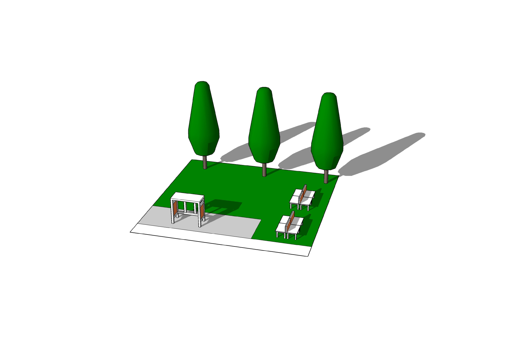
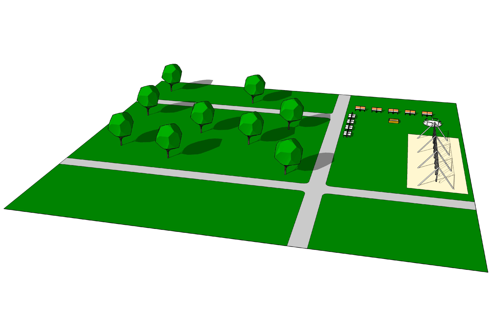
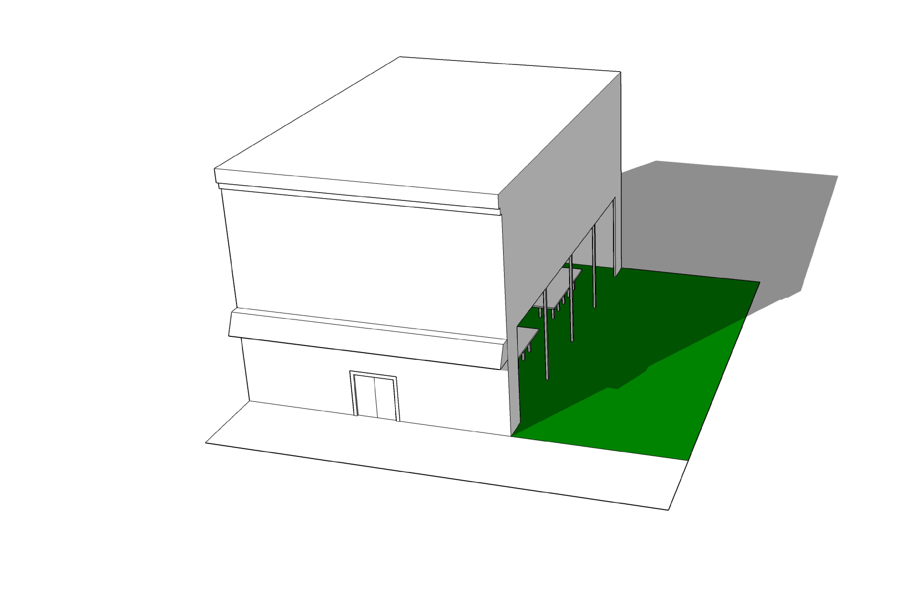

Mini

Neighborhood

Public Space
Conditions
In 2060, every Philadelphian has equitable access to multi-use public spaces that bring together diverse groups, encourage civic engagement, and support ecosystem services that increase the health of the city.
Typologies
Strategies
Reclaim Obsolete Street Space
Adapt Existing Community Buildings
Establish Public Steward Program
Develop Modular Programming Kits
Expand Wildlife Habitat
Create Civic Engagement Portals


Getting Started